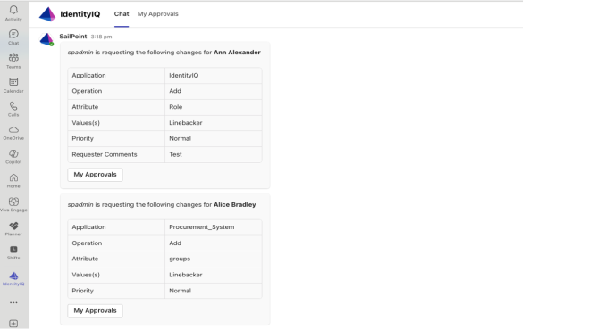
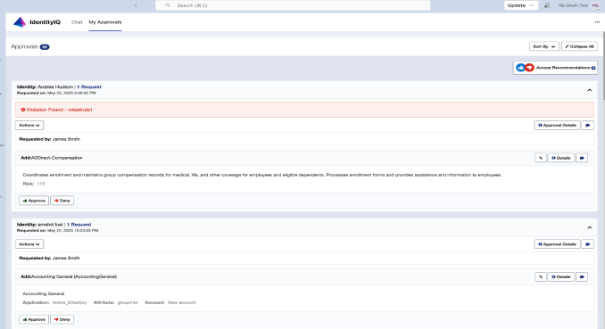

Using IdentityIQ Microsoft Teams
Ensure IdentityIQ application is added in Microsoft Teams from the approved apps list.
IdentityIQ application in Microsoft Teams enables the users to receive notifications of all the types available in IdentityIQ and when configured by the users during Enabling Microsoft Teams Notifications in IdentityIQ.
Microsoft Teams users receive notifications from IdentityIQ directly within the Chat tab of their IdentityIQ application. The notifications for Access Request Approval work items allows the users to Approve, Deny, Forward, or Assign/Reassign the requests on the application itself.
The notification may include links to IdentityIQ, that takes users to specific page for an action within the IdentityIQ. With the Single sign-on (SSO) configured between IdentityIQ and Microsoft Teams, users are taken directly to the relevant page in IdentityIQ without needing to log in again.
This integration is also accessible from Microsoft Teams on mobile phones, tablets and from web browsers. For details on supported operating system (OS) versions and browsers, refer to the SailPoint Installation Guide.
Note: If you're using Firefox or Safari, ensure that pop-ups are allowed and third-party cookies are enabled for smooth access to the IdentityIQ application in Microsoft Teams.
Microsoft Teams users can use these commands:
-
hello – returns a response with the version.
-
help – displays the bot help message.
-
identityiq – verifies the connection between IdentityIQ and Microsoft Teams.
-
notifications – makes the connection between the user's Microsoft Teams environment and their installation of IdentityIQ.
The IdentityIQ application in Microsoft Teams displays two tabs named Chat and My Approvals.
Note: The name of the My Approvals tab can be customized. You'll see the name that was defined during Installing and Configuring the IdentityIQ Service Code.
Chat Tab
Notifications will be displayed on the chat tab. Access Request Approval adaptive cards will provide a summary of the request along with a My Approvals button for direct access to the respective work item. However, the template used for Email Notifications will not contain the My Approvals button as this is only applicable for Adaptive Card Templates.

My Approvals Tab
The My Approvals tab displays all the Access Request Approval work items pending for the approver to take action.

Use the IdentityIQ application in Microsoft Teams to make decisions on Access Request Approval work items that are assigned to you. If you are a member of any workgroups, the listings include approvals for those workgroups.
My Approvals tab allows the user to view and manage the Access Request Approval work items. Approval work items sent on Microsoft Teams include the following type of access requests:
-
Role Requests
-
Entitlement Requests
Approval items are shown in an expanded view by default, showing full details for all items in the request. Select Collapse All to switch to a more compact display to view only the high-level work item details.
Select Expand All to expand the listing to the detailed view.
Users can perform Sort functionality to view the Access Request Approval work items by Newest, Oldest, or Priority.
If you have purchased the SailPoint's AI-Driven Identity Security license and enabled Access Recommendations, a button will be displayed at the top extreme right.
Use the Clip icon to see the attachment in the Access Request Approval.
Users can see the details of a request by selecting the Info icon. They can also change the start and end date for an Access Request Approval approval request by using the Calendar icon.